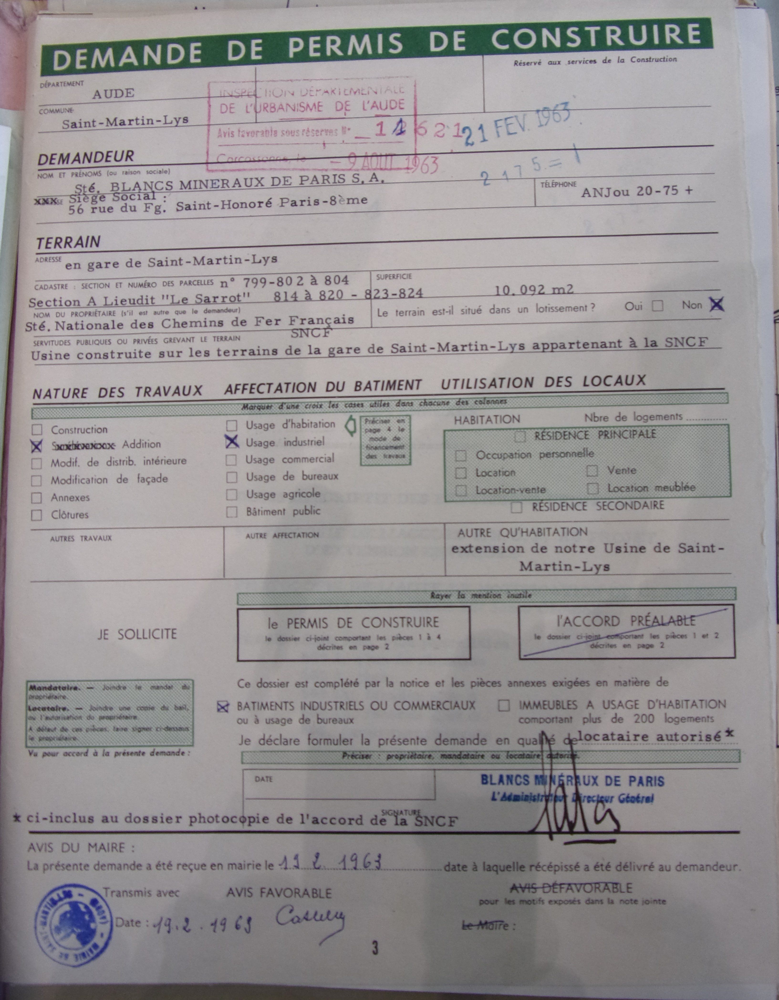
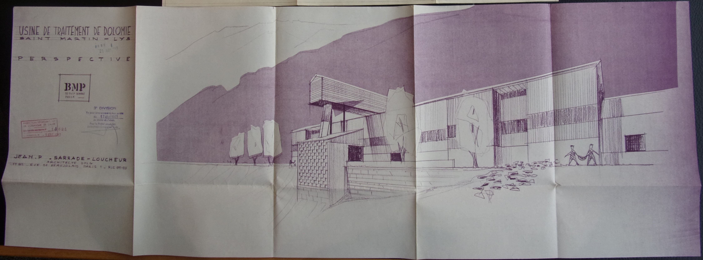

Saint Martin Lys
Usine de Dolomie
Documents des archives départementales
Permis de construire
19 février 1963 - Demande de permis de construire

plans accompagnant la demande de permis de construire

Devis estimatif accompagnant la demande de permis de construire
17 août 1963 - Arrété prectoral autorisant la construction
Commentaires
Cliquer ici pour faire un Commentaire
Retour à l'accueil Index complement 3